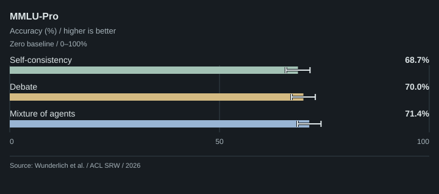
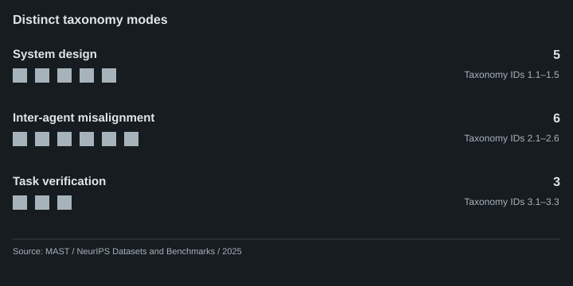

SpecPi starts with one strong agent and one writer. The harness can improve, but those improvements follow observed behavior and an explicit human decision.
These choices belong together. A smaller system makes behavior easier to observe. A single owner makes edits and validation easier to inspect. When something repeatedly gets in the way, we can identify a narrow intervention and determine whether it helped.
This is our starting architecture, with a burden of proof for additional machinery. Independent research, fresh context, and a second review can be useful. Their value depends on measurable improvements in accepted outcomes.
01 / Cost per accepted outcome
A model response is easy to count. A useful result takes more work to establish.
For a coding task, acceptance might require correct behavior, appropriate tests, a comprehensible diff, and reasonable human review. Finishing quickly while introducing a regression moves work downstream. A reviewer that raises ten plausible concerns can create more work than one that identifies a single material defect.
We therefore care about cost per accepted outcome: the resources spent obtaining a result that survives its checks and human review.
Track elapsed time separately. A faster run can still perform more total work.
Repeated context, reasoning tokens, cache behavior, failed attempts, integration, and human correction all belong in the accounting. Equal token ceilings do not guarantee equal consumption. Equal spending does not guarantee equal latency. Parallel execution may save time while increasing resource use.
The comparison we want is a strong single agent against a carefully scoped alternative, with comparable total resources. Giving extra compute to a team and comparing it with one short attempt does not isolate the value of coordination.
02 / Research findings and limits
Recent work supports restraint, and provides useful counterexamples. None of these studies benchmarks SpecPi. Our architecture decision is an inference from their findings and this project's requirements.
Task-dependent coordination results
Kim et al. compare 260 configurations across six benchmarks, matching system reasoning-token ceilings and tool access. Centralized coordination improves financial reasoning by 80.8% relative to the single-agent baseline; the multi-agent variants reduce PlanCraft performance by 39–70% relative. On SWE-bench Verified, the single-agent mean is 0.488 and the best multi-agent mean is 0.481. That coding comparison uses only 20 instances per configuration, and workers share a Docker filesystem. The roughly 45% capability threshold is a study-specific selection rule, not a universal boundary. Matched ceilings also do not imply identical billed cost.

Mean scores across tested models. The best multi-agent architecture is selected separately for each benchmark. Matched system token ceilings; actual spending can differ. No pooled score or significance claim.
Data and source details
| Benchmark | Single agent | Best multi-agent | Selected architecture | Instances per configuration |
|---|---|---|---|---|
| Finance Agent | 0.349 | 0.631 | Centralized | 50 |
| WorkBench | 0.629 | 0.664 | Decentralized | 100 |
| BrowseComp-Plus | 0.318 | 0.347 | Decentralized | 100 |
| PlanCraft | 0.568 | 0.346 | Hybrid | 100 |
| SWE-bench Verified | 0.488 | 0.481 | Hybrid | 20 |
| Terminal-Bench | 0.312 | 0.331 | Independent | 20 |
Results: domain-dependent performance; July 2026 version of record. Primary source ↗
{kind=link}
Capable language models can outgrow the benefits of collaboration ↗
Reasoning under matched requested budgets
Tran and Kiela test FRAMES and MuSiQue multi-hop questions. At a requested budget of 1,000 thinking tokens, averages across eight model–dataset combinations are 41.8% for the single agent, 37.9% for sequential agents, and 38.8% for debate. At larger budgets, some differences narrow; at the smallest tested budget, debate wins on average. The authors also identify imperfect API token accounting. These are text-only reasoning results under matched requested ceilings. They do not settle the comparison for tool-using coding workflows.

Table 1 averages over four models × two datasets (FRAMES and MuSiQue). Requested token ceilings, not identical actual consumption. The token axis is logarithmic. Three of the seven evaluated methods are shown.
Data and source details
| Requested thinking tokens | Single agent accuracy (%) | Sequential agents accuracy (%) | Debate accuracy (%) |
|---|---|---|---|
| 100 | 29.0 | 36.4 | 37.0 |
| 500 | 39.0 | 37.6 | 38.0 |
| 1000 | 41.8 | 37.9 | 38.8 |
| 2000 | 42.1 | 38.9 | 40.3 |
| 5000 | 42.7 | 38.6 | 42.0 |
| 10000 | 42.6 | 38.7 | 42.0 |
Table 1, Average rows; v2, 11 April 2026. Primary source ↗
{kind=link}
Ensemble accuracy and compute estimates
Wunderlich et al. evaluate 1,000 MMLU-Pro questions, primarily with Llama 3.1 70B. Mixture-of-agents reaches 71.4%, compared with 68.7% for self-consistency at comparable modeled compute: a gain of 2.7 percentage points. Individual accuracy estimates have uncertainty of roughly three points. Compute is estimated from arithmetic and memory transfer, rather than measured production latency. Non-reasoning models and static questions are useful evidence for configured ensembles, with limited transfer to today's coding agents.

Llama 3.1 70B; 1,000 MMLU-Pro questions. Best reported configurations within the tested compute range. Whiskers are approximate 95% binomial intervals, calculated using the paper's formula. These are not intervals on the differences.
Data and source details
| Method | Accuracy (%) | Configuration |
|---|---|---|
| Self-consistency | 68.7 | 10 iterations |
| Debate | 70.0 | 4 agents, 2 layers |
| Mixture of agents | 71.4 | 5 models, 4 layers |
Section 4.1 and Section 8; ACL SRW, July 2026. Primary source ↗
Individual 95% interval: 100 × [p ± 1.96 × sqrt(p × (1 − p) / 1000)], p = reported accuracy / 100. Rounded source estimates; no paired significance inference.
{kind=link}
Orchestration on context-intensive tasks
SwarmBench contains 400 samples across eight task types. Its cost-matched comparison covers four tasks and uses Claude Haiku 4.5 for both the single agent and swarm orchestrator. The swarm scores higher on multi-text understanding, long-text generation, and wide search; the single agent scores higher on root-cause analysis. The swarm has a heterogeneous worker pool, and the tasks deliberately exercise orchestration. That makes this evidence for specific delegation opportunities, without establishing superiority over a stronger single-agent baseline. Task scores use different metrics and should not be combined into one success-rate chart.

Haiku 4.5 single agent and orchestrator; heterogeneous workers; 50 examples per task. Single-agent spending is capped at each task's mean swarm cost. Different metrics and axis ranges; no combined accuracy. No comparison intervals are supplied.
Data and source details
| Task | Single agent | Swarm | Metric |
|---|---|---|---|
| Multi-text understanding | 28.00 | 40.36 | Judge score |
| Root-cause analysis | 3.11 | 2.00 | OpenRCA score |
| Long-text generation | 31.25 | 40.50 | Document-quality composite |
| Wide search | 16.30 | 19.05 | Item F1 |
Table 7, Appendix D.1; metrics in Appendix C.1; v1, 31 August 2026. Primary source ↗
{kind=link}
SwarmBench: Can Large Language Models Act as Agent Swarm Orchestrators? ↗
Parallel research in a production system
Anthropic reports a 90.2% relative improvement on its internal research evaluation using an Opus 4 lead and Sonnet 4 workers versus one Opus 4 agent. This is a product engineering report, not a matched-budget coding study. Its token-cost comparison is often misread: multi-agent systems use about 15 times chat tokens, while single agents use about four times chat tokens. The denominator is chat, not a single agent. The report makes a practical case for parallel exploration when independent lines of inquiry justify the expense.

Two separate observations, not a paired efficiency experiment. Performance uses an Opus 4 lead with Sonnet 4 workers against one Opus 4 agent. Absolute evaluation scores are undisclosed. Token multiples describe typical use relative to chat.
Data and source details
| Observation | System | Value | Unit |
|---|---|---|---|
| A / Research evaluation | Single agent | 100.0 | Performance index |
| A / Research evaluation | Multi-agent | 190.2 | Performance index |
| B / Typical token use | Chat | 1 | Token multiple vs. chat |
| B / Typical token use | Single agent | 4 | Token multiple vs. chat |
| B / Typical token use | Multi-agent | 15 | Token multiple vs. chat |
Internal research evaluation and token-use observations; 13 June 2025. Primary source ↗
Performance index: 100 × (1 + 90.2 / 100) = 190.2. This is a normalized illustration of the reported relative improvement, not a reported absolute score. Do not combine with the separate typical token-use observation to calculate evaluation efficiency.
{kind=link}
Single-agent execution of structured workflows
Xu et al. examine running homogeneous multi-agent workflows within one model's multi-turn conversation. In their Qwen3 8B HumanEval experiment, single-agent execution of AFlow improves pass rate from 86.8% to 90.5%, with similar latency. Another tested workflow becomes slightly slower. Cache reuse and execution structure matter alongside agent count. The question for SpecPi is which parts of a workflow provide value, and whether separate contexts are necessary to retain them.

Qwen3 8B on HumanEval; vLLM, 16k context, three-run means. Table 4 reports no uncertainty intervals. Compare execution methods within each workflow. Token budgets are not matched; latency and pass rate have separate axes.
Data and source details
| Workflow / measure | Single conversation | Stateless calls | Unit |
|---|---|---|---|
| AFlow / Pass rate | 90.5 | 86.8 | Percent |
| AFlow / Latency | 53.53 | 54.98 | Seconds |
| OneFlow / Pass rate | 87.4 | 87.0 | Percent |
| OneFlow / Latency | 4.83 | 4.31 | Seconds |
Section 4.2.4, Table 4; v1, 18 January 2026. Primary source ↗
{kind=link}
Coordination and verification failure modes
MAST examines 1,642 traces across seven frameworks and identifies 14 failure modes in system design, coordination, and verification, including repeated work, lost history, ignored input, and inadequate checks. Its taxonomy starts from a smaller human-reviewed set; large-scale annotation uses an LLM. The benchmark failure rates are not production statistics, and this is not a budget-matched single-agent comparison. Its value here is a vocabulary for inspecting what goes wrong between agents.

Each square represents one distinct taxonomy label. Counts describe the taxonomy's structure, not failure frequency, severity, or production reliability. There is no single-agent control group.
Data and source details
| Category | Distinct modes | Taxonomy IDs |
|---|---|---|
| System design | 5 | 1.1–1.5 |
| Inter-agent misalignment | 6 | 2.1–2.6 |
| Task verification | 3 | 3.1–3.3 |
Appendix A.1–A.3, printed pages 24–25; final NeurIPS 2025 paper. Primary source ↗
{kind=link}
03 / Context and integration overhead
A handoff creates a new boundary. The receiving agent sees a task description and selected context, then forms its own interpretation. An invariant, a failed experiment, an unusual caller, or the reason an obvious fix is unsuitable can disappear during selection or summarization.
Copying the entire conversation can carry stale assumptions into every worker. A fresh context can focus attention, but someone still has to assemble the packet and verify what returns.
Agreement also needs careful interpretation. Two instances of the same model can share blind spots. Different role names do not guarantee different errors. A fresh reviewer may notice a defect, or confidently object to correct code. Independent context is not independent proof.
One writer keeps integration and acceptance in one place. Other agents, when justified, can contribute evidence without independently changing the shared result.
| Task shape | Starting approach | Possible reason to delegate |
|---|---|---|
| Small, understood fix | One agent implements and checks | A demonstrated review gap |
| Tightly coupled change | One owner maintains relevant state | A separable investigation |
| Independent research | Gather evidence in bounded pieces | Better coverage or useful time savings |
| Large source collection | Select and organize relevant context | Measured context overload |
| Frozen change review | Explicit review with actual checks | More confirmed defects at acceptable cost |
Parallel tool calls remain available within a single-agent workflow. Searching independent sources concurrently does not inherently require separate agent identities or another coordination protocol.
04 / Harness improvement protocol
The single-agent default should become more useful as we learn where it struggles. In SpecPi, self-improvement means changing the harness through evidence and human selection. It does not mean retraining the model or granting it open-ended authority to rewrite its own rules.
Collection is opt-in. Local, sanitized capability-gap records capture observed friction. A
recurring gap can qualify for investigation, but a wishlist entry does not authorize
implementation. An exact human selection through
/harness-improvement establishes the change to
pursue.
- Observe recurring friction
- Qualify a capability gap
- Human selects one change
- Implement a narrow fix
- Run required validation
- Record later human outcome
Failed verification keeps work open. Later negative evidence returns a retired item to review; a new implementation still needs human selection.
The implementation should be small enough to inspect and reverse. Closing it requires actual
validation: npm run check, the item's closed, allowlisted validators, and
source fingerprints connecting the result to the evaluated files. Retirement rejects failed
gates or changed source inputs. A claim that a check would pass is insufficient; the command
must run. These receipts establish a bounded check result, not universal correctness.
Retirement closes the implementation loop, but the human outcome still matters. Did it help? Did it fail, remain unexercised, or get reverted? Those answers are evidence about the harness, including evidence that an intervention was unnecessary. A failed outcome can reopen a question for review. It does not authorize another autonomous modification.
This feedback loop gives us a way to improve without treating every plausible feature as progress. The task and evidence guide explains the implemented commands and receipt boundaries.
05 / Bounded delegation
The source now includes an explicit SDK host: specpi agent, supporting
Pi SDK 0.84.4 exactly. Within that host, the human can enable the fixed
calls/time envelope with /delegate on. Stock pi does not load this
runtime. The parent remains the sole writer and owns integration and acceptance.
Four profiles use the exact parent model and configured provider pipeline.
review and consult receive supplied context with no tools.
investigate and research can list, read and search only exact
selected text files in a checked source snapshot. Research has no live web access; the
parent obtains and selects the source material. Workers cannot run a shell, write files or
create more workers.
- Explicit work packet. Transfer the requirements, relevant decisions, non-goals, bounded question and selected evidence. State why the work is independent and what the parent will do meanwhile. The scheduler cannot prove that independence.
- Fixed resource limits. At most two worker requests are active across the launcher. A job has a 120-second deadline; follow-up shares its original deadline and counters. Automatic retries are disabled. Cancellation revokes source access, but keeps the request's slot occupied until the provider settles.
- Evidence and uncertainty. Reports include requirement coverage, findings, contrary evidence and missing context. The host checks source identity and line ranges; the parent checks whether the evidence supports the claim. A receipt or parent acceptance is neither human permission nor proof of task completion.
- Honest accounting. Limits bound model invocations, time and retained parsed output. They are not hard raw-network, provider-attempt, invoice or process-memory caps. Cost is unavailable, and incomplete usage is not reported as zero. Policies requiring stronger guarantees are unsupported.
- Selected context. The parent transcript is not automatically inherited. Selected material goes to the configured provider. Worker state stays in memory, while ordinary parent tool results may enter Pi's session record. This is not an OS sandbox; trusted Pi extensions remain privileged.
The launcher disables project resource discovery by default. Its explicit
--trust-project option permits those resources for a trusted launch. Proxy
policies the SDK bootstrap cannot preserve are rejected. Read the
implementation guide
and
calls/time protocol
before enabling the experiment.
Subsequent evidence adds constraints: CooperBench separates clean merges from successful integration; MTRouter evaluates learned sequential routing; Paritok-4B measures information loss under compression; and OrchestraBench tests recovery from injected faults. The expanded research ledger records their methods, limitations and design implications.
Deterministic fixtures exercise the runtime contract; they do not establish better outcomes. The evaluation plan compares selective delegation with a capable single agent given the same additional resources. A 30–50-case pilot would debug the protocol and estimate variance; a separate holdout must assess confirmed findings, missed defects, false positives, correction time, actual resource use and elapsed time. These experiments have not been reported.
One agent and one writer remain the default. The delegation implementation is an opt-in experiment; promotion requires measured improvement on a defined class of work.
Seven-study comparison cutoff: 4 September 2026; the expanded research ledger was reviewed through 5 September. This note uses the July Nature version of record and distinguishes workshop papers, preprints, and vendor engineering reports. Findings can change with models, budgets, task design, and tooling. The architecture and evaluation criteria are SpecPi's interpretation; no comparative SpecPi delegation outcomes are reported.
Implementation reference: v0.11.2 README and security model.